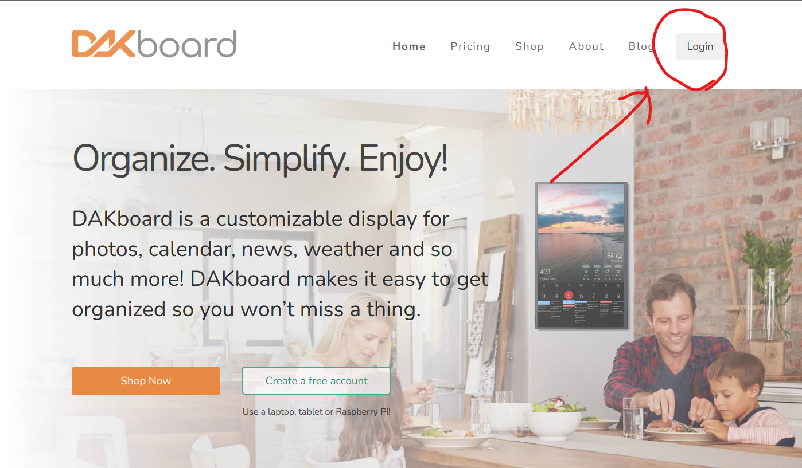
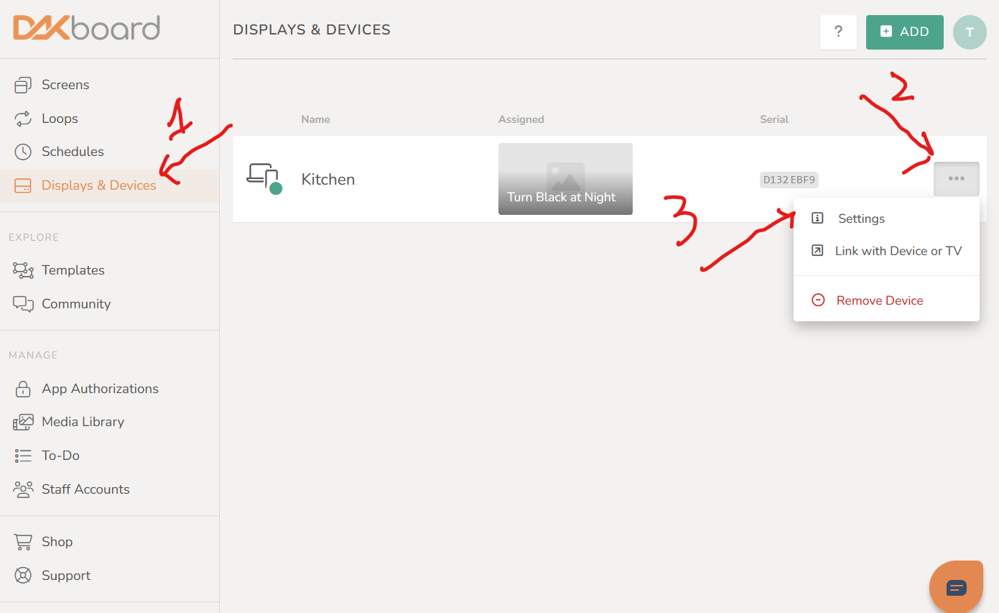
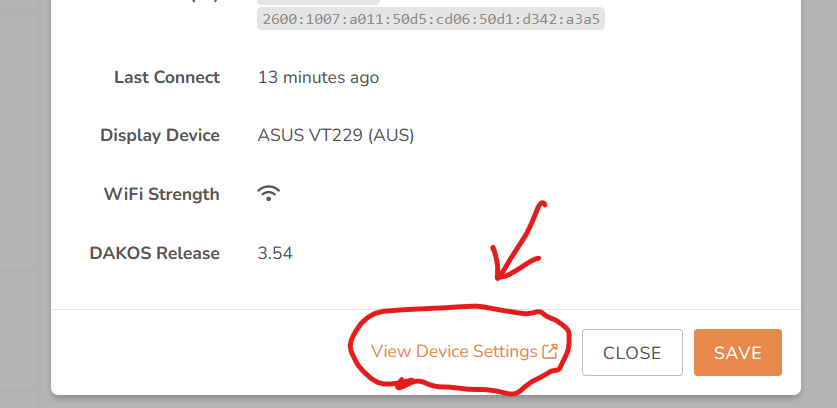
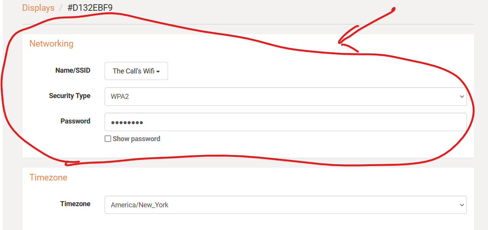

Welcome to the Troubleshooting page?
Here, there are steps in order to solve common issues.
Please try following these steps to fix your issues before contacting me.
Troubleshooting
Jump to a specific issue
Welcome to the Troubleshooting page?
Here, there are steps in order to solve common issues.
Please try following these steps to fix your issues before contacting me.
No Wi-Fi connection
If your DAKboard has disconnected from your wifi, you can easily restore it using another device.
First, log in to the DAKboard web portal using your username and password.
After you login, go to displays and devices in the sidebar. Then, click the three-dot menu next to your device and select Settings.
Then, a page with settings will open up. Click View Device Settings, and a new tab will open.
This new page will have wi-fi options on it. Select the network name from the dropdown, and enter your password in the "password" field. Leave the securiry field at the default.
Finally, scroll down to the bottom of the page and click the orange Save Changes button.